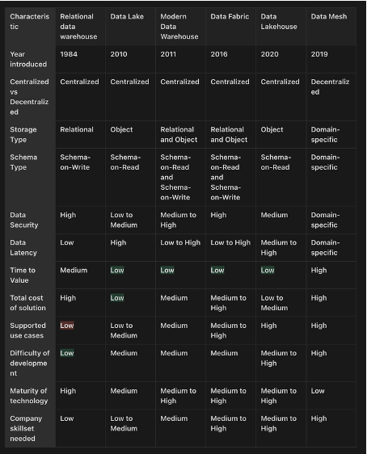
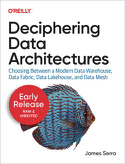
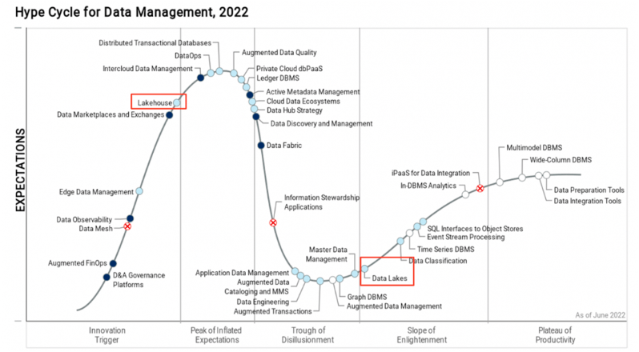
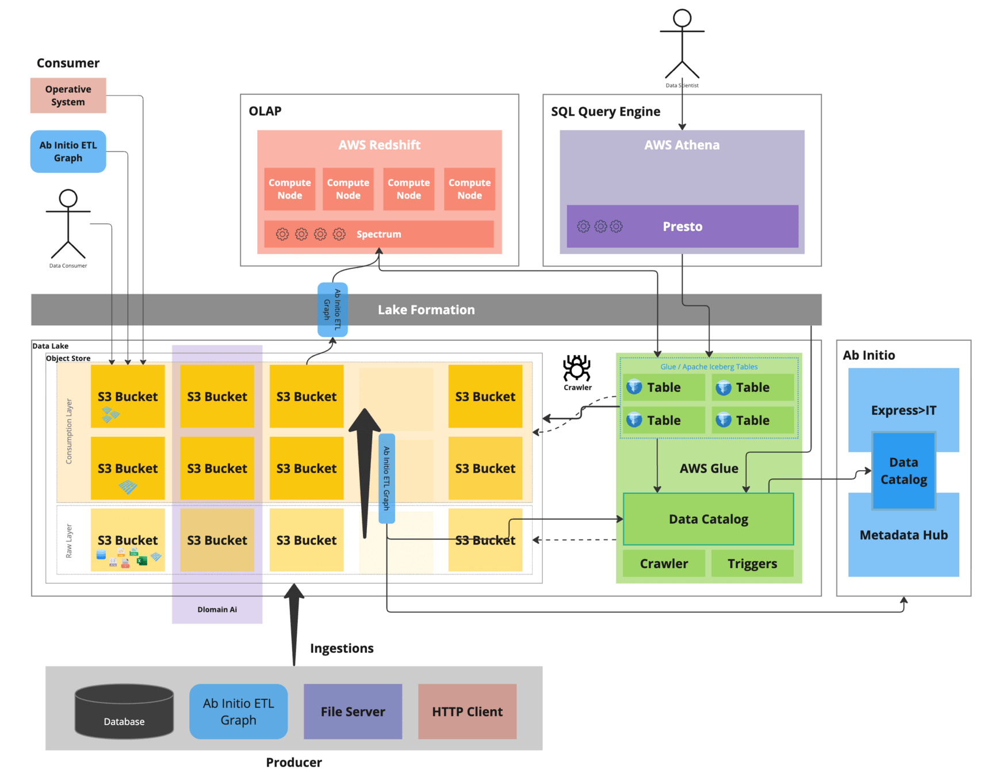

through the Cloud Data World
Patrick Favre
Techie Lunch • 2024
Centralized, monolithic OLTP databases. Simple but difficult to scale performance.
Object storage for unstructured data. Scales storage/compute independently; hard to manage.
Introduction of Data Fabric and Modern Data Warehouse architectures.
Relational abstraction over object stores. Adoption of Delta Lake and Iceberg.
Decentralized Domain Driven Design approach to organizational data.


Central store for metadata (types, location, compliance, governance, discoverability).
Raw copy from source; unchanged form.
Normalized, partitioned, and deduplicated.
Business logic applied; ready for consumption.
Decentralized approach to data architectures.
The core concept to be extracted from Data Mesh.
"Focus on the value delivered, not just the pipeline."
See latest CTO posts on internal portal.


BI / Analytics departments often have lower average tech skill due to reliance on standard software.
There is a massive, complex ecosystem of data products across major hyperscaler portfolios.
Wave of Data Warehouse → "Something Modern" transformations incoming.
Any Questions?